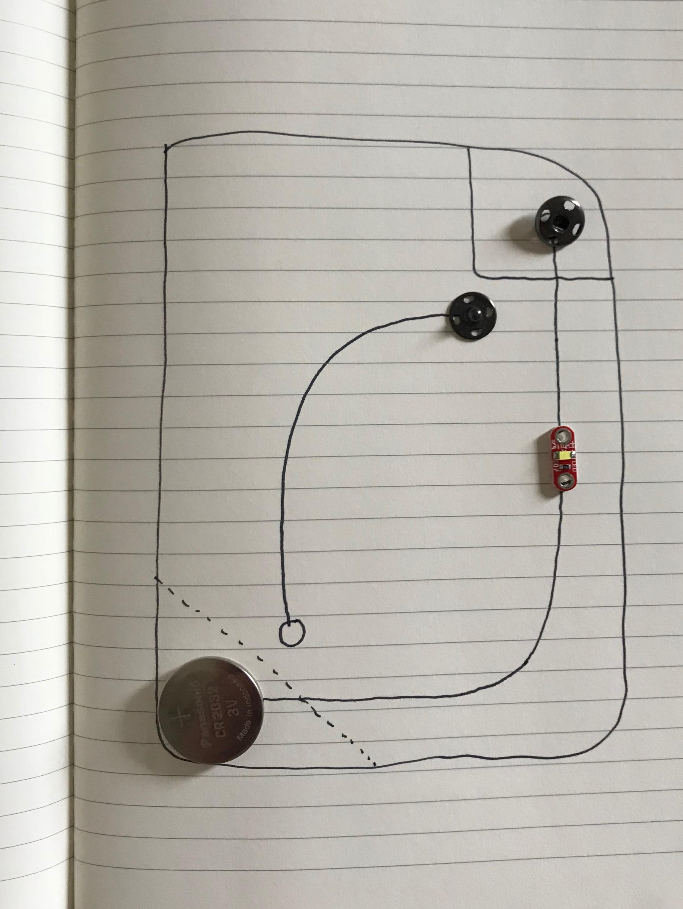

'Oh snap!' Swatch Exchange
A set of four "swatches" made in the spirit of the E-textile Swatch Exchange program, which aims to "emphasize the importance of physicality and quality workmanship in an increasingly digital world."
Each hand-sewn swatch contains a copper thread circuit that can be closed with a snap. When the circuit is closed, the swatch's mini light-emitting diode (LED) shines.

Four hand-made swatches, varying only in color

Four hand-made swatches, varying only in color

A cell battery adds power to the copper thread and snap circuit

When the circuit is closed and powered, the LED shines
Paper prototype

Testing materials